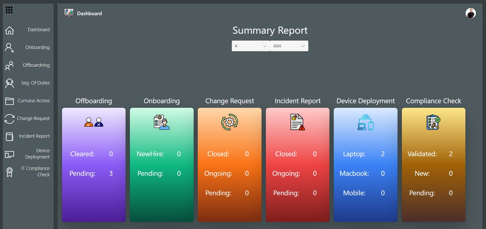
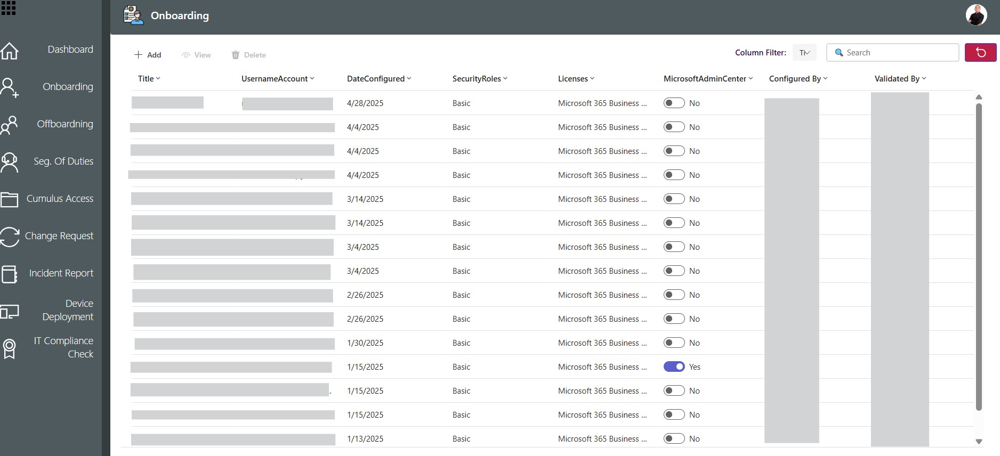
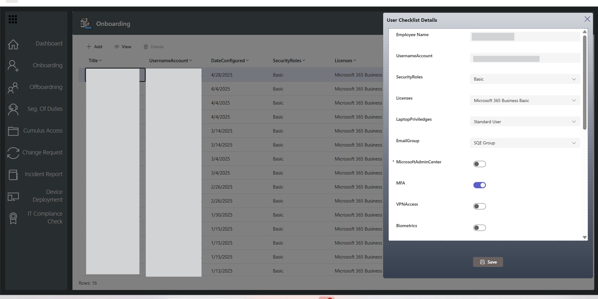
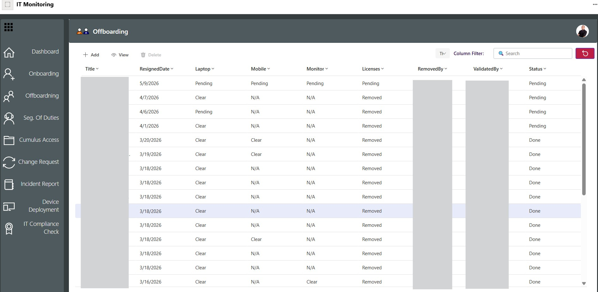
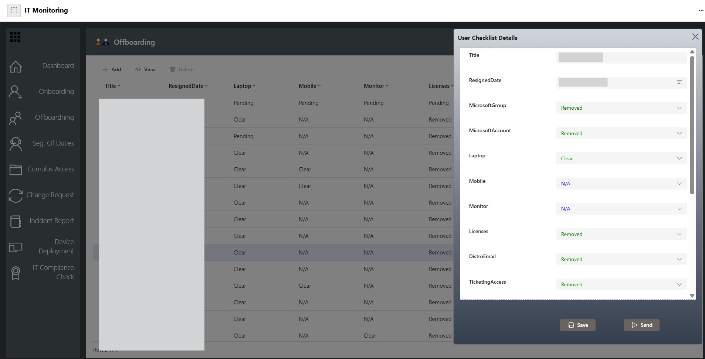
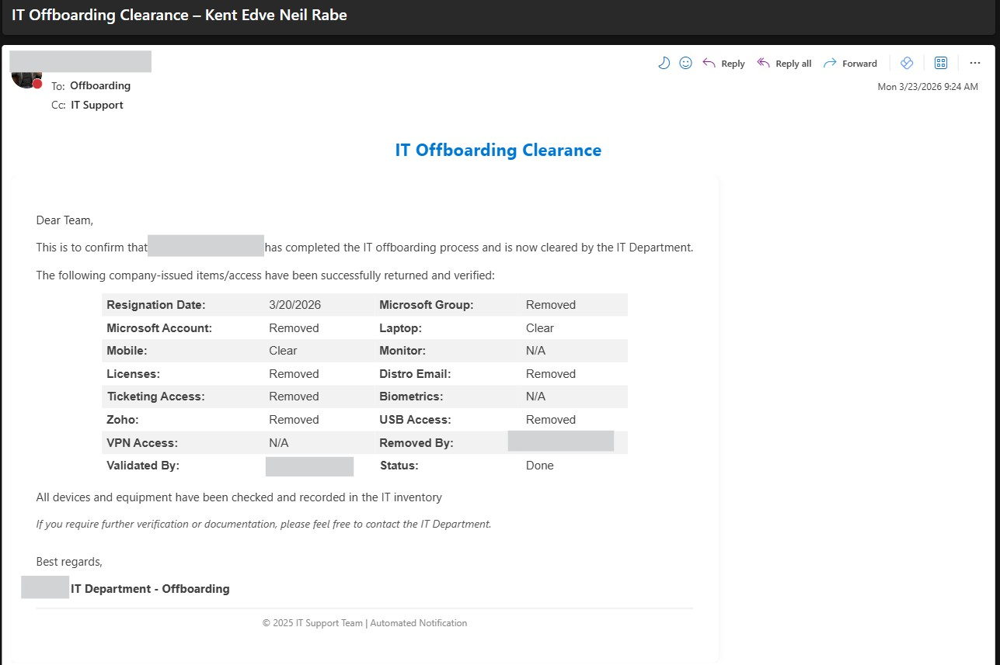

Tools: Power Apps | Power Automate | SharePoint
Designed and deployed a centralized IT operations platform using Power Apps, Power Automate, and SharePoint to unify key IT service processes. Automated onboarding, offboarding, access management, incident reporting, and device deployment workflows, reducing manual effort and improving process speed. Implemented real-time tracking, automated notifications, and Form-to-App integration, enhancing visibility and request turnaround efficiency by up to 40–60% (adjust if needed). Enabled secure, scalable IT service management with role-based access control and automated credential generation for device deployment.
Real-time dashboard showing the status of onboarding, offboarding, access requests, incidents, and device deployments in one centralized view.

Tracks and manages new user onboarding, including access provisioning, device assignment, and task completion status in a centralized system.


Tracks user offboarding, including access removal, asset return, and clearance status, with automated email notifications sent to stakeholders upon completion.


